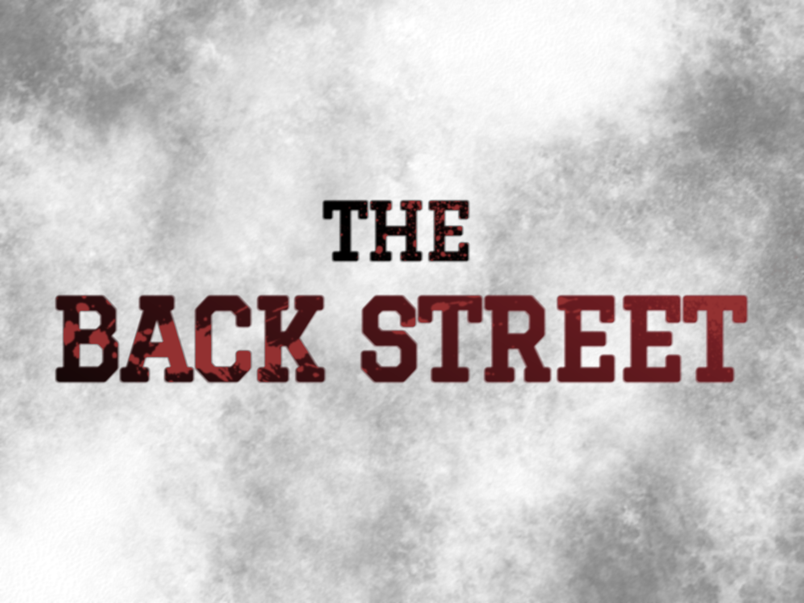

|
The Back street
백 스트리트 시리즈
|
|
|  | |
| 제작 | Studio D’CANTO |
|---|---|
| 배급 | AD TEN Entertainment |
| 장르 | 느와르, 피카레스크, 오픈 월드, 1인칭 액션 RPG |
| 한국어 지원 | 자막, 한국어 음성 |
| 심의 등급 | 청소년 이용불가 |
| 시리즈 시작 | The Back street: Omertà |
| 최근 작품 | The Back street: Vendetta |
Studio D’CANTO가 개발한 오픈 월드 액션 RPG 게임.
1950~1960년대의 시대상을 기반으로 한다. 갱단과 마피아가 지배하는 ‘웨일 시(Wail State)’가 배경. 수많은 점조직들이 세력 확장을 위해 투쟁하던 시기를 지나, 현재는 4개의 구획으로 나뉘며 비교적 안정을 찾은 상황이라는 설정이다.
플레이어는 한 인물과 우연히 접촉한 것을 계기로 마피아의 일원이 된다.
스토리를 따라 진행되는 시나리오 모드와, 오픈 월드에서 진행되는 자유 모드로 나뉜다.
플레이어는 구획 내에서 각종 임무를 수행하며, 미션 및 의뢰를 일정 비율로 완료하면 승급 혹은 세력 확장이 가능하다.
넓은 커스터마이징 범위와 높은 자유도로 유명하다.
플레이어의 행동은 평판(Reputation)으로 누적 평가된다. 평판은 NPC와의 상호작용과 미션 난이도, 시나리오 모드의 분기점과 특정 이벤트의 활성화 여부 등에 영향을 미친다.
플레이어의 평판은 세 가지 수치와 미션 성과 지표를 종합해 산출된다. 각각 총 5단계로 ‘매우 낮음’, ‘낮음’, ‘보통’, ‘높음’, ‘매우 높음’으로 구분.
정해진 스토리를 따라 진행되기에 플레이어의 자유도가 낮다.
메인 빌런 세력인 센트럴 로드와의 충성도/신뢰도를 올릴 수 없다. 한 가지 예외로 플레이어의 평판이 ‘나쁨’ 상태거나 충성도/신뢰도가 ‘매우 나쁨’이 될 경우, 센트럴 로드의 배신 제의 이벤트가 발생하며 해당 미션을 수락하면 예외적으로 올릴 수 있다. 단 배드 엔딩이 강제 활성화되며, 다른 세력의 충성도 상승이 완전히 차단된다.
2편 시나리오의 경우 세력 간의 충돌을 다루기에, 애션 패밀리 중심이었던 1편에 비해 비교적 자유도가 높고 엔딩이 다양하다.
자유 모드의 미션은 두 가지 범주로 나뉜다. ‘임무’의 경우 소속된 세력에서 하달받는 ‘저격, 암살, 운송, 감시/미행, 회수’ 등. 보상이 일정하며 충성도에 영향을 크게 끼친다. ‘개인 의뢰’는 비공식적인 문제 해결과 정보/물건 등의 개인적인 거래 등의 퀘스트. 미션 난이도에 따라 보상이 차이가 크며, 우호도에 주로 영향을 끼친다.
자유 모드에서 평판이 낮아지면 퀘스트 수주가 제한되며, 특정 상점이나 중개인을 통한 거래 및 미션 수급이 불가능해진다. 또한 NPC와의 대화 선택지가 감소하거나 적대적 반응이 증가한다. 평판이 높을 경우 특수 퀘스트 수락이 가능해진다.
도시 내의 술집, 클럽, 항구, 상점 등의 장소에서 소문을 수집할 수 있으며, 일정 시간대나 특정 평판에서만 뜨는 정보가 존재한다. 정보 거래를 주된 수입으로 한다면 필수적으로 챙겨야 하는 부분.
무기, 복장, 차량, 하우징 등의 커스텀이 다양하다.
남부 구획을 장악한 패밀리. 남부 구획은 ‘웨일 시의 피렌체’라는 별명을 가진, 세련되고 고전적인 외관이다.
명예와 가족애를 최우선으로 여기며, 전통적인 마피아의 규칙과 가치관을 따르기에 극도로 정돈된 분위기를 가진 집단. 4세력 중 거의 유일하게 혈통을 중요시하는 세력이다.
상징은 희고 붉은 장미. 전통과 순교, 혈통을 의미한다. 상징답게 입단식 후 정식조직원이 되면 장미나무로 만든 로사리오[1]를 하사받는다.
4세력 중 가장 오래되었고 가문 단위로 형성되어 그에 대한 선민의식이 다소 존재한다. 그러니 마피아로서의 존중이 있어 타 세력과 크게 마찰하는 일은 드물다.
수장의 호칭은 ‘Boss(보스)’ 혹은 ‘Padre(파드레)’. 조직 수뇌부는 Cathedral(대성당)이라 칭한다.
중앙 구획을 장악한 갱단이자, 백 스트리트 시리즈의 메인 빌런. 중앙 구획은 번쩍이는 불빛과 복잡한 스카이라인, 높은 빌딩으로 이루어진 대도시의 외관이다.
초기에는 도시 중심을 지키기 위한 자경단의 목적으로 형성되었다. 그러나 8년 전부터 부패하기 시작하였으며, 5년 전 쿠데타로 수장이 바뀐 뒤 중앙에서 가장 크고 폭력적인 갱단으로 변질되었다.
상징은 보토니 십자가. 자경단이었던 시절의 상징물을 현재까지 사용 중인 듯하다. 본래는 믿음과 질서를 의미했으나, 현재는 무색해진 상징.
대부분의 세력과 상호 적대하는 관계. 애션 패밀리의 정통성이나 클로 소사이어티의 세력 규모에 열등감이 있다고 추측된다.
수장의 호칭은 ‘Head(헤드)’. 조직 수뇌부는 Core(중심부)라 칭한다.
동북부 구획을 장악한 연합 조직. 동북부는 여러 문화권의 구역이 합쳐져 있어, 분위기가 통일되지 않고 세력마다 제각각이다.
여러 파벌이 연합하여 형성되었기에 장악한 구역이 가장 넓고 세력이 강대하다. 그러나 연합체인 만큼 내부의 하위 조직들 사이에서 벌어지는 갈등이 다른 세력에 비해 잦으며, 이로 인해 ‘협상자’의 존재가 필수적으로 여겨진다.
상징은 수리(eagle). 강인함과 영역, 조율을 의미한다. 일시적으로 무리를 형성하여 생활하는 맹금류라는 점에서 착안한 듯하다.
센트럴 로드를 제외한 타 세력에 가장 배척 없는 태도를 보인다. 이미 강대한 세력과 연합조직이라는 특성 때문인 듯.
수장의 호칭은 ‘Chair(의장)’. 조직 수뇌부는 Nest(둥지)라 칭한다.
서북부 구획을 장악한 신흥 집단. 서북부 구획은 작은 건물들이 모인 도시로, 타 구획에 비해 일상적이고 밝은 분위기를 보인다.
비교적 최근에 성립되어 규모와 장악 구역이 작다. 타 세력에 대항하고 자신의 구역을 보호한다는 목적성을 잃지 않은 유일한 세력.
상징은 등불. 보호와 공동체, 경계선을 의미한다. 다만 성립 시기가 비교적 최근이라 널리 쓰이진 않으며, ‘등대’ 역시 상징물로 혼용해 사용한다.
타 세력과 최대한 마찰하지 않으려 하나, 침범에는 가장 예민하게 반응한다. 특히 센트럴 로드와의 관계는 최악.
수장의 호칭은 ‘Leader(리더)’. 조직 수뇌부는 Home(집)이라 칭한다.
부제목의 뜻은 ‘침묵의 계율’. 마피아 사이에서 명예를 위해 지켜야 하는 규칙 중 하나로, 조직의 비밀을 누설하지 말라는 의미.
애션 패밀리를 중심으로 시나리오가 진행된다. 시나리오는 6챕터까지 존재.
우연한 계기로 애션 패밀리의 메이드 맨인 ‘리카르도 카스틸리오네’를 만나 입단한 플레이어가 패밀리에게 인정받기 위해 임무를 수행하는 스토리로 이루어져 있다.
백 스트리트 시리즈는 성별, 외모, 과거, 배경 등 거의 모든 요소가 커스터마이징이 가능하나, 1편에서는 단 한 가지가 고정되는데 바로 혈통.[2] 이탈리아 혈통만이 입단할 수 있다는 고증을 따른 듯.
부제목의 뜻은 ‘복수’.[3] ‘집단의 명예를 걸고 목숨을 바쳐서 꼭 해내야 될 보복’을 의미한다.
1편으로부터 3년이 흐른 시점. 애션 패밀리를 제외한 타 세력의 비중이 크게 늘었으며, 1편에서는 설정 상의 세력에 불과했던 라이트하우스가 등장한다. 시나리오는 8챕터까지 존재.
남부 구획에 영향력을 끼치려다가 1편 주인공에게 저지당한 센트럴 로드가 서북부의 라이트하우스를 탄압하기 시작하며, 애션 패밀리와 클로 소사이어티가 일시적으로 협력하는 스토리를 다룬다.
자유 모드에서는 왜인지 여기저기서 잡동사니를 슬쩍하여 훔칠 수 있다.그야 범죄 저지르는 게임이니까… 장물은 전당포에서 현금으로 바꿀 수 있으며, 무기를 단시간에 업그레이드하려는 유저들의 자금원 중 하나가 되어 주는 중. 단 꼬리가 길면 밟히니 주의. 자칫하면 소속된 세력에서 평판을 대폭 깎아먹게 될 수 있다.
맵이 넓고 자유도가 높다 보니 최적화가 거지같은(…) 게임으로 유명했다. 2편에서는 많이 호전되었다.
[1] 묵주(Rosario). 주로 가톨릭에서 기도를 할 때 사용하는 도구로, 장미 화관이라는 뜻. ↩
[2] 남부 혈통으로 고정된다. ↩
[3] 센트럴 로드의 보복과, 그에 맞서는 타 세력들의 대항을 동시에 의미한다. ↩
이 문서는 팬메이드 자캐 문서이며, 실제로 존재하는 게임 및 웹사이트가 아닙니다.